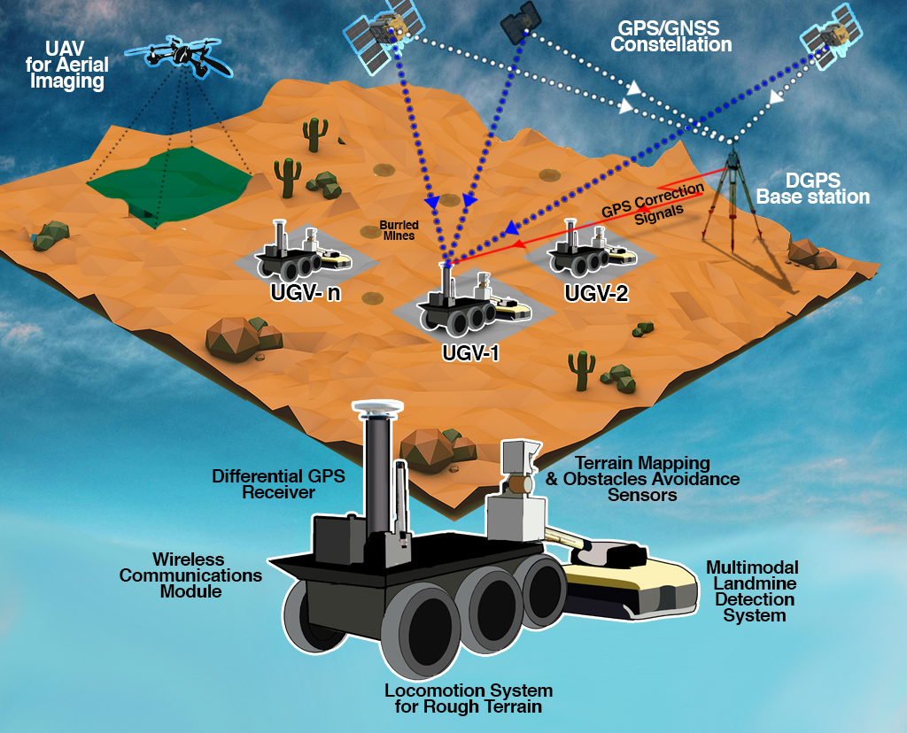
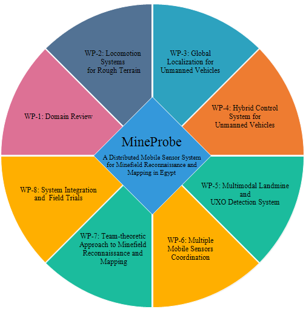

MineProbe: A Distributed Mobile Sensor System for Minefield Reconnaissance and Mapping in Egypt

EU-Egypt Innovation Fund - Grant Scheme 1 - EuropeAid/132-715/M/ACT/EG
Detection and removal of antipersonnel landmines is, at the present time, a serious problem of political, economical, environmental and humanitarian dimensions in Egypt. Egypt has been listed as the country most contaminated by landmines in the world with an estimate of approximately 22.7 million landmines and other explosive remnants of war (ERW). The humanitarian demining activities carried-out to remove landmines and UXOs from the vast contaminated areas in Egypt are not on the same level of the problem. Following the currently used conventional techniques, the mission of removing a great numbers of landmines would be very slow, labor intensive, costly, inefficient, extremely dangerous and stressful process. This project aims at developing a novel minefield reconnaissance and mapping system in Egypt (MineProbe) focusing on North West Coast (NWC) as location of the action. The project involves collaboration between researchers, experts in their fields, from academic, industrial and governmental institutions pooling their talents to find innovative solutions to the problem of reconnaissance and mapping in NWC.
MineProbe encompasses a number of spatially distributed unmanned ground/aerial vehicles equipped with different types of sensors to detect obstacles, mines and UXOs as illustrated below. The system provides a digital map for the minefield. In this minefield map, the exact locations of the detected surface-laid and buried landmine and UXOs will be identified. This mine map can be used later by the Army engineers to destroy or deactivate the identified ordnances in the field.
 |
The specific objectives of the project are as follows:
- Identify different challenging aspects of the problem of humanitarian demining in Egypt.
- Studying different candidate solutions in terms of locomotion mechanisms, types of sensors for obstacle detection, buried landmines and surface unexploded ordnance (UXO) detection, modes of operation and communication mechanisms among the mobile sweepers.
- Leveraging the experience acquired in this project to provide the blue print of a smart mobile sensor system able to provide a mine map that contains the location of the detected landmines and UXOs.
- Migrate the developed system, sensors and sweeping and mapping approaches into off-the-shelf standardized minefield reconnaissance and mapping technology.
- Training of highly qualified personnel and generating knowledge of crucial importance, which may be a key for the daily struggle against landmines in Egypt.
MinePorbe project is organized around eight interrelated work packages with 23 tasks. All of these work packages and tasks are vital for the design and development of ideas and solutions of this project.

Download: MineProbe Brochure
MineProbe YouTube Channel: MineProbe YouTube
Project Members Only: Project Management Tool
Project Members Only: Email Web Client